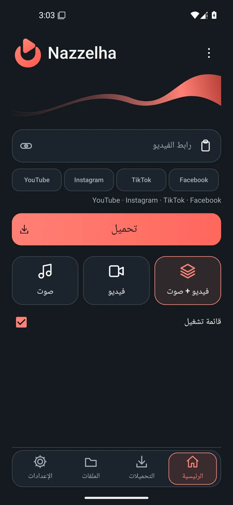

تعرّف تلقائي على المنصة
الصق الرابط المدعوم، والتطبيق بيتعرف على مصدره تلقائيًا.
من رابط واحد، اختار الفيديو أو الصوت من المنصات المدعومة، وحدد الجودة المتاحة، ونزّلها من مكان واحد.

لقطة حقيقية من التطبيق · v0.5.9
المميزات اللي بتخلّي تجربة التنزيل أسهل.
الصق الرابط المدعوم، والتطبيق بيتعرف على مصدره تلقائيًا.
اختيارات الجودة والصيغة بتظهر من بيانات كل رابط. مش قائمة ثابتة أو دقات مضمونة.
اختار العناصر اللي عايزها من قائمة تشغيل مدعومة، وتابع تنزيلاتك.
نزّل فيديو مع صوت أو فيديو فقط أو صوت فقط، حسب الصيغ اللي المصدر بيوفرها.
من فيديو متاح ومسموح لك بتنزيله.
الصق الرابط واضغط تحميل عشان التطبيق يقرأ البيانات.
اختار من الخيارات الفعلية اللي ظهرت، وابدأ التحميل.
لا. التطبيق بيستخرج الصيغ والجودات اللي المصدر بيوفرها للرابط نفسه. لو جودة مش موجودة، مش هتظهر كاختيار متاح.
تقدر تتحقق من تحديثات التطبيق من الإعدادات أو تحمل آخر APK رسمي من هنا. الموقع ما يقدرش يعرف الإصدار المثبّت على جهازك تلقائيًا.
دي صفحة تحميل التطبيق وعرض مميزاته. تحليل الروابط واختيار الجودات والتنزيل بيتموا جوه تطبيق أندرويد.
التطبيق يدعم الروابط العامة المحددة في المشروع. المنشورات الخاصة أو اللي بتطلب تسجيل دخول أو اللي مصدرها غير متاح ممكن تفشل، والجودات بتختلف حسب الرابط.
الإصدار المنشور حاليًا للأجهزة المتوافقة بنظام Android بمعمارية ARM64. لا يوجد إصدار iOS منشور.
حمّل آخر إصدار رسمي، واختار اللي يناسبك.